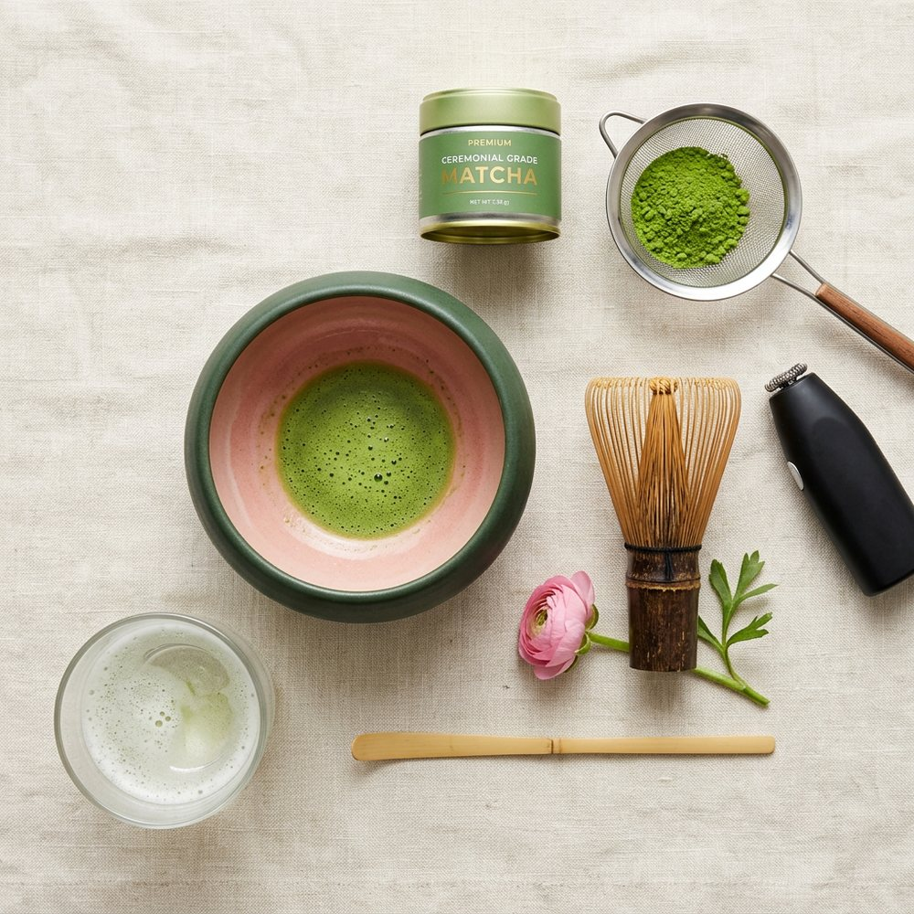

Tamiza 1 g
Dos chashaku colmados por la malla fina. El batidor empuja los grumos, no los deshace: si no tamizas, te quedará uno en la lengua en el tercer sorbo.

Veintisiete tazas y un poco de agua a 70 °C. Eso es lo que hay detrás de las tardes en las que sigues enfocada a las cinco, no te tiembla el pulso y duermes como si no hubieras tomado nada. El bote de 54 g sale a 1,11 € la taza; en tu cafetería, el mismo vaso cuesta 4,50 € y lleva jarabe.
★ 4,9 · 1.284 reseñas verificadasEnvío 24-48 h30 días de prueba con el bote abierto
Gratis desde 35 € · Península 24-48 h
Una finca, un lote, una fecha de cosecha
Analizado: sin pesticidas detectados
No te gusta: lo devuelves abierto
Seis cosas concretas: el bote con el que empieza todo, los dos kits, el vaso de las capas y la sudadera que nos pedíais. Cada ficha te dice por qué ese y no otro, no cuánta poesía cabe en un párrafo.

Casi todo el que llega al matcha compra primero un bote y descubre que en casa no tiene un cuenco de borde ancho, ni un batidor de verdad, ni cómo medir un gramo. El Kit Pro es ese descubrimiento hecho caja: chawan de gres de 320 ml, chasen de 80 púas tallado de una sola pieza, chashaku, tamizador de malla fina, espumador USB-C para los días de prisa y soporte de bambú para secar el batidor (la pieza de tres euros que le duplica la vida).
Dentro va además el bote de ceremonial de 54 g. No es un detalle de Marketing: es que la primera espuma la hagas con matcha bueno, y no con el polvo de supermercado que tenías en el armario y sabía a heno.
El matcha no es un suplemento ni un truco de marketing: es la hoja entera de un té cultivado a la sombra, molida en piedra y bebida en Japón desde hace novecientos años. Nosotros hacemos dos cosas: traer el lote que nosotros beberíamos y explicarte cómo prepararlo para que te salga rico. Lo demás lo pones tú, con una taza al día.
Escribir «matcha» en Google y encontrar cuarenta opciones con la misma foto verde es la razón número uno por la que la gente lo deja. Nuestro consejo es aburrido y funciona: mira cómo lo vas a beber.
No hace falta un curso ni un Ceremony Set. Estos son los cuatro pasos y el motivo de cada uno; si te amarga, casi nunca es el polvo: es el agua.
Dos chashaku colmados por la malla fina. El batidor empuja los grumos, no los deshace: si no tamizas, te quedará uno en la lengua en el tercer sorbo.
Hierve y espera cuatro minutos destapado. A 100 °C arrastras los taninos que astringen y quemas los aminoácidos que endulzan: te quedas con lo peor de cada uno.
De muñeca, sin apretar el batidor contra el fondo. En círculos mueves el líquido; en «W» cortas la superficie y la montas. Buscas microespuma, no espuma de fregar.
El matcha caliente pierde aroma en dos minutos. Es un momento corto por diseño, y por eso funciona todos los días.
Comparado con lo que tomas ahora, taza a taza. Y no venimos a demonizar el café: si te sienta bien, bébelo por la mañana. La diferencia está en cómo cae la tarde.
Cifras por taza estándar: 1 g de matcha (68 mg de cafeína) frente a un expreso doble (~120 mg) y una lata energética. Lo de los plazos es lo que nos cuentan los clientes, no un estudio clínico.

Las plantas se tapan semanas antes de la recogida. Menos sol obliga a la hoja a producir más clorofila y más aminoácidos: eso es el umami dulce que notas en vez de amargor, y lo que hace que el polvo salga de un verde casi eléctrico en lugar de un verde pardo.
Después se retiran los tallos y las venas —lo que queda es tencha— y se muele en piedra a unos 40 g por hora. Es lento a propósito: una bola industrial muele veinte veces más rápido, calienta el polvo y quema parte del aroma antes de que lo abras.
Se envasa en origen con nitrógeno y en bote opaco, porque el peor enemigo del matcha no es el transporte: es el oxígeno y la luz de tu cocina. Por eso publicamos el lote y por eso recomendamos consumirlo en 60-90 días desde la apertura.
Sin estrellas compradas ni frases de dos líneas: pedimos a quien compra que nos cuente cómo lo toma y qué le pasó. Puedes leerlas antes de decidir, y pinchar en lo que compró cada uno.
Cada una con gramos, temperatura y el motivo por el que se hace así. Si te sabe a hierba cortada, está aquí la respuesta antes de culpar al té.
La guía que te da
la textura perfecta
Cuatro pasos, temperaturas, qué hacer si amarga y cómo guardar el bote para que no pierda aroma. Junto al PDF te llega un cupón del 10 % para tu primer pedido. Un email al mes con recetas y ofertas reales; nada de cuenta atrás falsa.